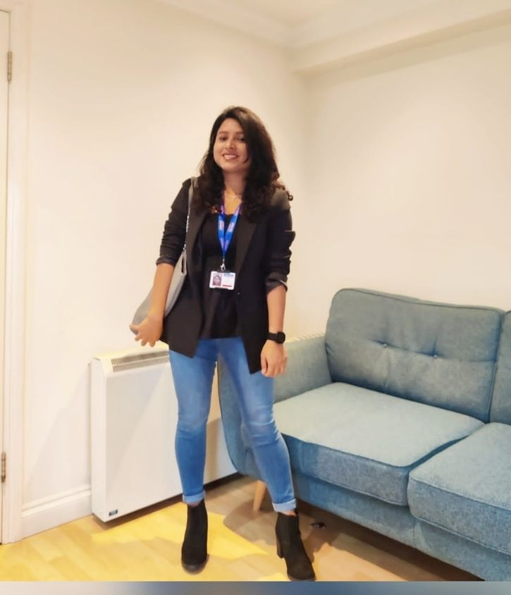

Technical Agile Project Manager & Scrum Master · PMP® · PSM I · 11+ Years · India & UK
I sit at the intersection of deep technical execution and structured delivery leadership — bridging engineering teams and business outcomes with equal fluency on both sides.

With 11+ years in software engineering and technical delivery, I've built a career at the intersection of engineering and programme leadership — across India and the UK, in Banking, Telecom, and Travel domains.
My foundation is in .NET development and backend systems, which means I come to every RAID log, every sprint review, and every stakeholder call with context a non-technical PM simply doesn't carry. I know when an estimate is padded. I know when a dependency is being underplayed.
I'm currently making a deliberate transition into AI-augmented delivery leadership — exploring how LLMs, RAG systems, and agentic workflows are transforming how teams plan, execute, and report. My goal: to lead the delivery of AI products, not just manage projects around them.
A leading UK retail bank was running critical banking workflows — spanning payments, credit risk, and customer-facing services — on legacy WCF-based vendor integrations. The architecture was tightly coupled, difficult to maintain, and increasingly incompatible with the bank's modernisation roadmap. Every change required extensive coordination across multiple vendor contracts and internal teams, slowing delivery and increasing operational risk.
I was deployed onshore in London as the single point of contact between the client's senior stakeholders and the Accenture delivery team in India — responsible for owning the programme end-to-end from requirements through to production release.
The migration from WCF to REST API was not a like-for-like swap. It required re-architecting integration touchpoints across payments, credit risk, and multiple downstream systems — each with their own release cadences, compliance requirements, and business stakeholder expectations. Running this in parallel with live production systems meant zero tolerance for defects and a non-negotiable requirement for phased delivery with full rollback capability at every milestone.
Coordinating across seven cross-functional teams — Payments, Credit Risk, QA, DevOps, Security, Product, and senior delivery leadership — while maintaining sprint velocity and keeping a distributed offshore team aligned was the core delivery challenge.
The legacy WCF integrations were successfully replaced with a modern REST API layer across the platform, reducing integration complexity, improving system maintainability, and enabling the bank to onboard new vendor integrations in days rather than months. The project was recognised by UK client leadership and resulted in an ACE Award for exemplary performance and client success.
Managing a platform modernisation in a live banking environment taught me that delivery leadership is fundamentally a risk management discipline. Every decision — from sprint commitment to API contract design — needed to be made with the production system in mind. The technical work was complex, but the harder challenge was maintaining trust across seven teams and two geographies while keeping a non-negotiable delivery timeline intact. That's the work I want to keep doing, now with AI tooling layered on top of it.
A live web application and three documented prompt engineering artifacts — each solving a real delivery pain point. Designed, built, and deployed during a strategic upskilling sprint.
Six awards across four companies over a decade. Not a one-off — a pattern.
Open to TPM, PM, Delivery Lead, AI Project Manager, and Engineering Manager roles — India remote or hybrid.